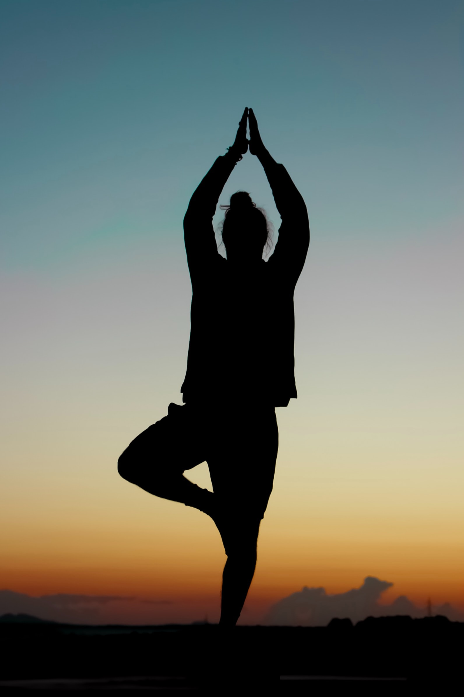

Triathlon
Vooral kwart triathlons: 1,5 km zwemmen + 40 km fietsen + 10 km lopen

Opleiding Hatha Yoga instructeur

Vooral kwart triathlons: 1,5 km zwemmen + 40 km fietsen + 10 km lopen

| Auteurs | Boeken |
| Esther Perel | Liefde in verhouding |
| Ries Eric | De Lean Startup |
| Pairoux Anja | Waarom overkomt mij dit weer? |
| Disa Jironet | Misdaad en mededogen |
| Hamer Jurriën | Waarom schurken pech hebben en helden geluk. |
Mijn hobbies houden me in balans. Enerzijds ben ik sportief actief en hou van intense trainingen.
Anderzijds kom ik tot rust door yoga en meditatie.
Luisteren naar muziek, boeken lezen en een rustgevende wandeling in de natuur geven me mogelijkheid de batterijen terug op te laden.
Ik hou ook van reizen en culturen. In het verleden heb ik in het buitenland gewerkt. O.a. U.S.A en Dubai.
Zoals je kunt zien in mijn cv spreek ik ook een aantal talen en vind ik het boeiend om met mensen van andere culturen te praten.